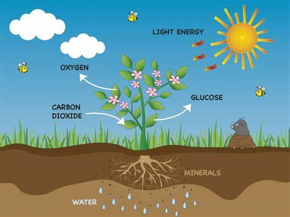

Las plantas tienen pigmentos llamados clorofila en sus células que les permiten absorber la luz solar. Estos pigmentos están ubicados en estructuras llamadas cloroplastos. Cuando la clorofila absorbe la luz solar, se excita y libera electrones de alta energía.
Los electrones liberados son transportados a través de una cadena de transporte de electrones en la membrana del tilacoide del cloroplasto. Durante este transporte, la energía liberada se utiliza para bombear protones (iones de hidrógeno) desde el estroma (el espacio interior del cloroplasto) hacia el espacio del tilacoide, creando un gradiente de protones.
La energía del gradiente de protones se utiliza para sintetizar ATP, una molécula que almacena energía. Además, los electrones liberados se combinan con el NADP+ (una coenzima) para formar NADPH, una molécula que almacena electrones de alta energía.
